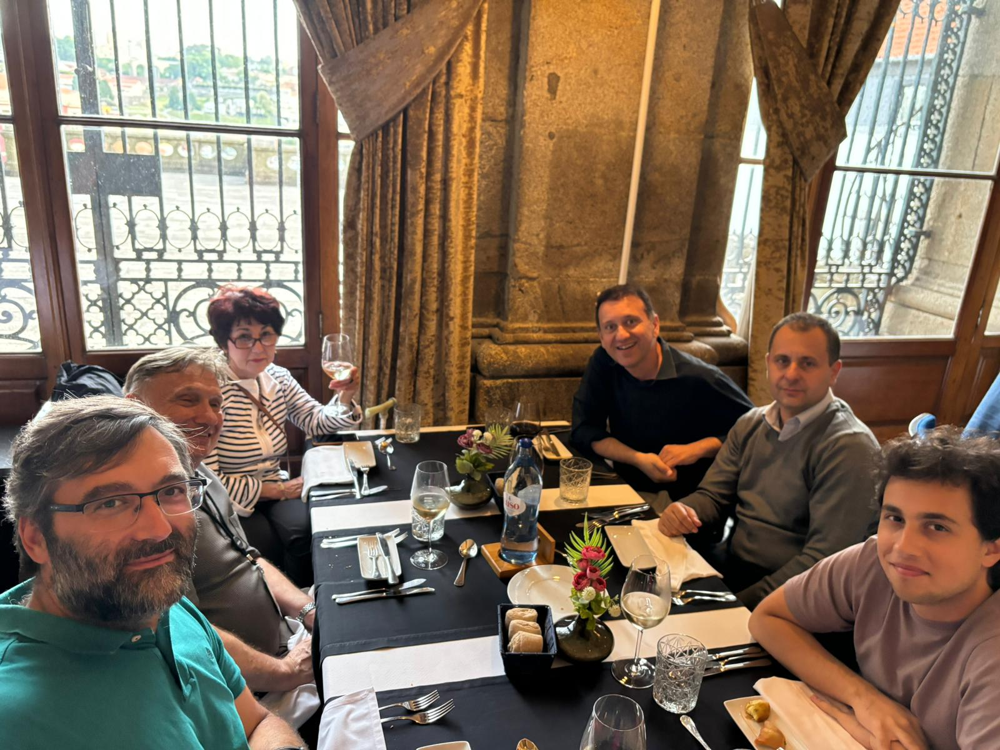

Graduate Research and Teaching Assistant
Mathematics, Koc University Research interests: Numerical analysis, numerical linear algebra,
physics-induced modeling. Contact: tucar24@ku.edu.tr
Distance to eigenvalue.
Dinner with friends from ICMASC'24 at Porto (it's me first from the right).